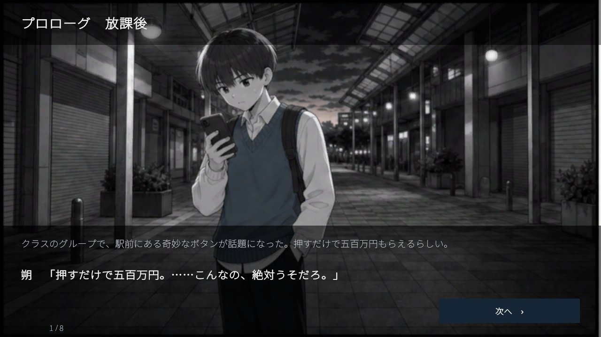

Home / Games / 500 Million Years
Press the button. Then watch what happens next.500 Million Years

Read the guide below, or load the game when you are ready.
Language note: this one is Japanese only, text and voice. The 3D scene and the structure carry across, but the writing is the whole point of the game, so an English version is on my list.
There is a button. Press it and you get five million yen. The catch is that the moment you press it, your consciousness goes somewhere with no light, no walls and no exit, and you stay there for 500 million years. You cannot die and you cannot sleep. When the time is up, every memory of it is erased and you come back holding the money.
That is the 500 Million Year Button, a thought experiment from a short manga by Sota Sugawara, and most people who hear it end up arguing about it. If the memory is erased, is it free money? Or is it still unmistakably you who lives those years?
The original sets the payout at one million yen. This game raises it to five million, which does not change the argument so much as make it harder to wave away.
This game does not answer that. It shows you the part nobody talks about: what a mind actually does with 500 million years of nothing.
At a Glance
| Genre | Observation clicker, idle game, narrative |
|---|---|
| Price | Free, no install, no account |
| Platform | Desktop browser recommended |
| Language | Japanese only (text and voice) |
| Length | 500 million years in game. Roughly 7 to 9 hours of real time on a first run |
| Saves | Auto-saved in your browser |
| Build size | About 27MB. Audio streams in per scene |
How It Works
The boy in the empty space is called Saku. He is fourteen, and he believes he is human. Everything he does across those years comes out of a personality that was written before he arrived.
You accelerate time. Doing that accumulates synapses, and synapses unlock thought cards. Each card is a stage of what Saku is capable of thinking about, and the more you spend, the more demanding the thoughts get.
| Synapses | The resource. Earned by accelerating time, spent on unlocking thought |
|---|---|
| Thought seeds | Locked cards whose contents you cannot see yet. You can pay to open them early |
| Thought level | How far Saku's mind and language have developed |
| Unlocked cards | Stay in the lower row. Each one fires a long observation event exactly once |
He starts by sorting out how he feels about being there. Then he plays word games with himself. He starts finding patterns. He counts. He gets into something resembling mathematics. He begins holding conversations with himself. And eventually he starts asking what it means that he is here at all.
None of that repeats. There is no grinding the same event for numbers. Each card level is a single long scene that happens once and then makes way for the next.
Controls
| Accelerate time | The button at the bottom, clicking the 3D space, Space, or Enter |
|---|---|
| Rotate the camera | Drag the screen |
| Zoom | Mouse wheel |
| Reset the camera | R |
| Mute | M |
If you hear nothing at the start, that is the browser's autoplay block. Click the game once and it comes back.
Developer's Note
I wanted to make a game you learn something from without it being boring, and philosophy turned out to be the right fit. Philosophy starts with a question, works through it and arrives at an answer, which is almost exactly the shape of a game. The 500 Million Year Button was the obvious subject because the thought experiment already is a decision with consequences you have to sit with.
The hard part was audio. Adding voice acting blew the build size up immediately, and for a browser game that is fatal. What saved it was a compression approach I had worked out earlier for a completely different problem: fitting 172 fish into Creature Fishing without killing the browser. The same trick applied straight to audio files and the build came back down.
Rigging and audio both still have rough edges. But the thing works, and the subject is the strongest I have picked.
FAQ
- What is the 500 Million Year Button?
- A thought experiment from a short manga by Sota Sugawara. Press it and you get a cash payout, at the cost of 500 million years alone in an empty space, unable to die or sleep. Every memory of it is erased when you return. The original sets the payout at one million yen; this game uses five million.
- Do I have to wait 500 million years?
- No. With time acceleration and the card progression, a first run takes about seven to nine hours of real time. It auto-saves, so you can spread that out.
- Is it in English?
- Not yet. Text and voice are Japanese only.
- Why is the first load slow?
- The build is around 27MB. Audio streams in scene by scene rather than all at once, so only the first load is heavy. It may look frozen. Do not refresh.
- Do I have to keep the tab open?
- No. Progress auto-saves and you can come back in the same browser. Time does not pass while the game is closed.